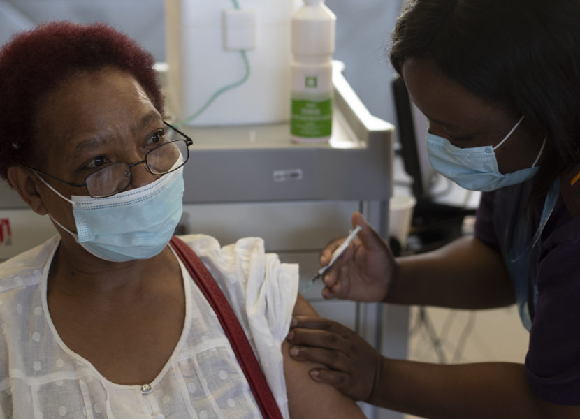
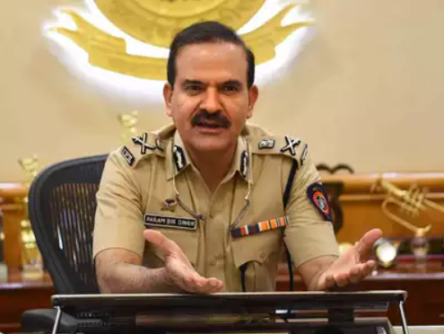
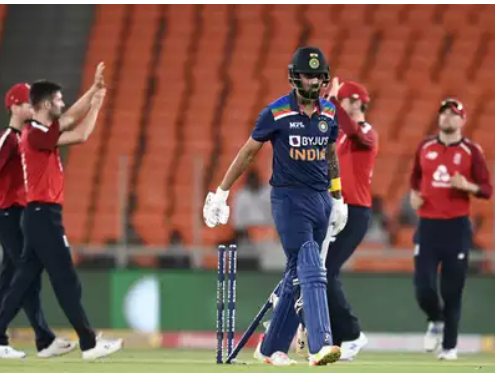
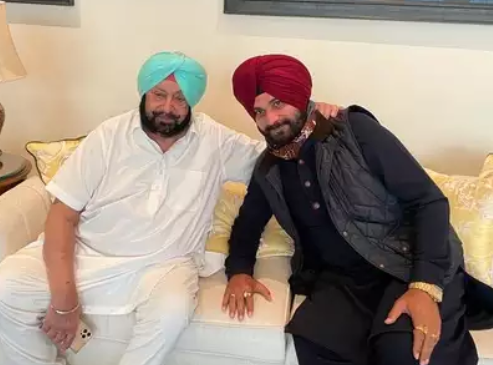
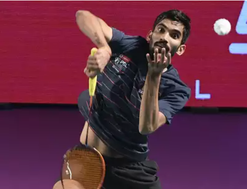
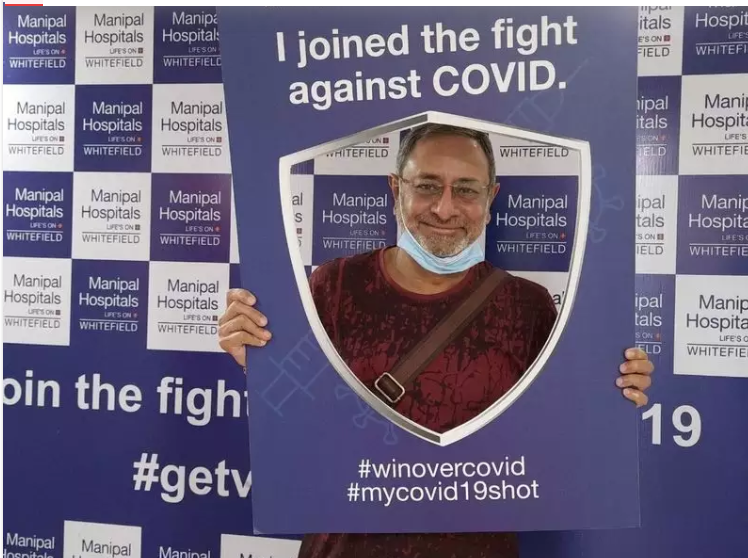
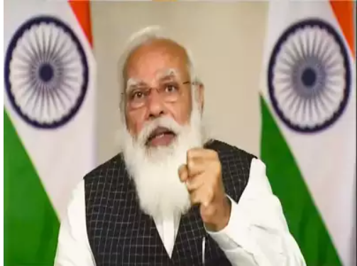
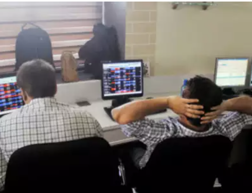
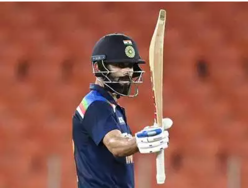

Featured News

Maggie Sedidi, a 59-year-old nurse at Soweto's Chris Hani Baragwanath hospital, receives the Johnson & Johnson COVID-19 vaccine from a health staff member at a vaccination center in Soweto, South Africa, Friday, March 5, 2021. (Photo by Themba Hadebe/Associated Press)

The Maharashtra government on Wednesday transferred Mumbai police commissioner Param Bir Singh amid controversy over an explosives-laden SUV found near industrialist Mukesh Ambani's residence and the subsequent arrest of city police officer Sachin Waze.
India will soon be able to deploy a specialized oceanic surveillance ship capable of tracking nuclear-tipped ballistic missiles at long ranges as well as undertaking critical hydrographic surveys in the Indian Ocean Region. The indigenously-built 15,000-tonne missile range instrumentation ship is equipped with a wide array of long-range radars to

When a flamboyant yet classic top order batsman hits a rough patch, it sparks consternation and despair along with some surprise and intrigue. KL Rahul has spawned all of that.

Punjab chief minister Amarinder Singh and Navjot Singh Sidhu met over tea on Wednesday, discussing the possible reinduction of the cricketer-turned-politician's into the state cabinet. The ex-cricketer, who had resigned from the Punjab cabinet in 2019 after being stripped of a key portfolio, had met the chief minister at his farmhouse in Mohali.
West Bengal chief minister Mamata Banerjee on Wednesday announced to launch student credit card worth Rs 10 lakh; minimum annual income of Rs 12,000 for backward community people, Rs 10,000 financial aid to farmers as she released the Trinamool Congress manifesto for the upcoming assembly elections.
The Income Tax Department on Wednesday claimed to have detected undisclosed income of about Rs 400 crore after it raided some entities based in poll-bound Tamil Nadu who handle "huge" cash and have offshore links. The Central Board of Direct Taxes (CBDT), which frames policy for the tax department, said in a statement that the raids were carried out on March 11 at 20 locations in Chennai, Coimbatore, Salem, Virudhunagar and Theni.

India's ace shuttlers Kidambi Srikanth and Parupalli Kashyap suffered early exits in the prestigious All England Open Badminton Championships, losing their respective opening round men's singles matches on Wednesday.

Senior Citizen Rakesh Mathur, who received his vaccine shot weeks back is looking forward to resuming travelling in the coming months. Recounting his own experience, he urges all citizens to get vaccinated and not give into hesitancy right now.

PM Modi on Wednesday held a virtual meet with all chief ministers to discuss the prevailing Covid-19 situation and the vaccination drive in the country. The meeting coincides with India recording this year's highest single-day tally of fresh Covid-19 cases. Chief ministers of Bengal and Chhattisgarh are not attending the interaction with the PM, which is currently underway.

Investors have lost over Rs 5.55 lakh crore in four days of decline in the domestic equity markets.Rising domestic Covid-19 cases and selling in RIL and banking stocks dragged down the 30-share BSE Sensex by 562.34 points or 1.12 per cent to 49,801.62 on Wednesday.In four days, the benchmark has fallen by 1,477.89 points or 2.88 per cent.

India skipper Virat Kohli has moved back into the top five while England star batsman Jos Buttler has re-entered the top 20 in the latest ICC men's T20I rankings after blistering performances in their ongoing five-match series in Ahmedabad.